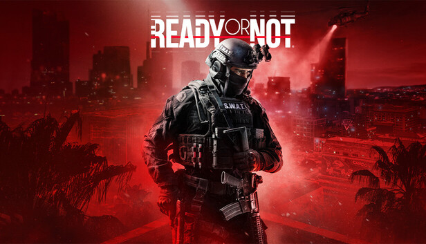

Even Hansen
Velkommen til min portefølje.
Her viser jeg fram prosjektene mine,
interessene mine, og det jeg lager enten på skolen eller på fritiden.
Om meg
Jeg er elev på Gjennestad VGS og går på linjen IT og Medieproduksjon.
Helt siden jeg var liten har jeg vært interessert i blant annet gaming, fotografi, video og kreativt arbeid.
Dette har ført til at jeg har valgt å gå på linjen IT og Medieproduksjon, hvor jeg får muligheten til å lære mer om disse interessene.
Jeg planlegger å studere vidrere med programmering, og håper å kunne jobbe med spill utvikling i fremtiden.
Mye av fritiden min går til gaming, spesielt spill som War Thunder.
Hvis jeg ikke brukte så mye tid på gaming, ville jeg sikkert lent mer mot å bli maskintekniker.
Selv i sommerferien, jobbet jeg å designe en helt spesialdesigned stridsvogn. Alt fra scratch,
og jeg måtte forske rundt på nettet for tegninger av stridsvogner, og hvordan de fungerer.
Noen Favorittspill:

War Thunder

Stray

Grave/Digger

Ready or Not

Hitman: World of Assassination

Little Nightmares
Kontakt meg
Har du noen spørsmål? Ta gjerne kontakt: